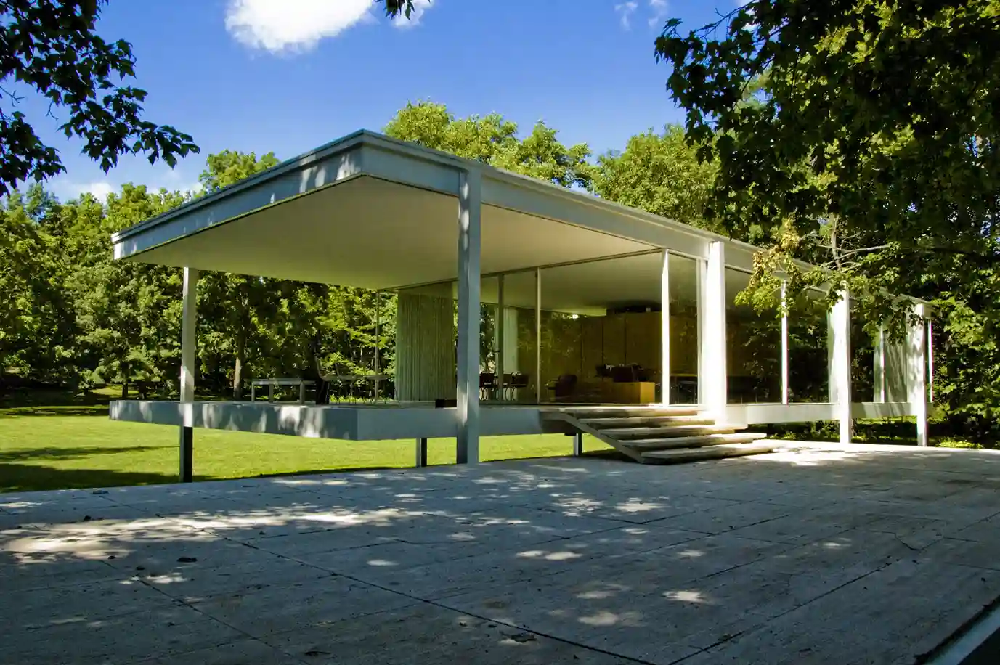

Our People
Meet the Visionaries

Marcus Hale
Founding Principal
Sarah Jenkins
Chief Executive Officer
David Chen
Chief Financial Officer
Stackly Architecture is an international collective of designers, engineers, and visionaries. We view every structure as a living entity that breathes with its environment and shapes the human interactions within.
Work With UsWe choreograph light, shadow, and volume to create environments that feel instinctively balanced and emotionally resonant.
We celebrate the raw, natural beauty of stone, timber, steel, and concrete—allowing materials to age gracefully and tell a story.
No building exists in isolation. We meticulously study the local topography, climate, and culture to root our designs in their unique locale.
True luxury is found in ergonomics and flow. We prioritize the wellbeing and daily experience of the people who will inhabit our spaces.
Fads fade, but exceptional craftsmanship endures. We obsess over the minutiae of joinery, transitions, and bespoke finishes.
We look beyond 'green design' toward regenerative architecture that actively contributes to the restoration of local ecosystems.

Stackly Architecture began as a small avant-garde collective dedicated to challenging the mundane. Over the years, our unwavering commitment to architectural purity and functional elegance has propelled us onto the global stage.
Today, our diverse team of multi-disciplinary experts collaborates across borders, seamlessly integrating advanced engineering with artisanal craftsmanship to deliver iconic spaces that stand the test of time.
Bespoke Designs
Design Experts
Countries Served
Stackly Architecture opened its doors in a 200 sq ft studio with two architects and a vision to redefine luxury residential design.
Our first overseas commission — The Meridian Residence in Switzerland — put Stackly on the global architectural map.
Became a certified LEED partner, embedding net-zero principles into our standard design workflow.
Received 7 international design awards including the prestigious European Architectural Excellence Prize.
Expanding into urban masterplanning and mixed-use developments across Asia, the Middle East, and the Americas.
"Stackly completely transformed our vision into a tangible masterpiece. Their attention to detail and understanding of materials is unmatched in the industry."
"Working with this studio was a revelation. They don't just build structures; they craft experiences. The spatial harmony they achieved in our new headquarters is breathtaking."
"Their dedication to contextual integrity meant our coastal retreat feels like it naturally emerged from the cliffs. It's a sanctuary that honors its surroundings."